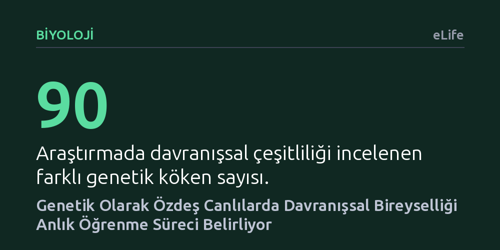

BIYOLOJI · eLife · 2026-10-07
Araştırmacılar, genetik olarak özdeş bireyler arasındaki davranış farklılıklarının ne kadarının anlık öğrenme deneyimlerinden kaynaklandığını 90 farklı genetik kökene sahip binlerce sinekte inceledi. Deneyler, öğrenme sürecinin aynı çevre ve genotipe sahip canlılarda bile belirgin ve kalıcı bir bireysellik oluşturduğunu ortaya koydu.
Bireysel farklılıklarımızın yalnızca genlerimiz ve geçmiş çevremizle sınırlı kalmadığını, öğrenme sırasındaki anlık deneyimlerimizin de bizi benzersiz birer birey yaptığını gösteriyor.

Aynı genetik yapıya sahip olan ve tıpatıp aynı çevresel koşullarda büyüyen canlılar bile birbirinin kopyası gibi davranmaz. Biyoloji dünyasında uzun süredir bilinen bu olgu, genellikle genetik miras ile geçmiş çevresel etkilerin karmaşık kesişimine bağlanıyordu. Ancak iki birey tamamen aynı geçmişe sahip olsa dahi, belirli bir anda karşılaştıkları duruma neden farklı tepkiler verir? Bu temel soru, bireyselliğin biyolojik kökenlerine dair önemli bir boşluğa işaret ediyordu.
Araştırmacılar, bu farkın kaynağını anlamak için anlık deneyimlerin ve öğrenme kabiliyetinin rolüne odaklandı. Klasik bakış açısı, bireyselliği büyük ölçüde sabit genetik ve gelişimsel faktörlere dayandırırken; bu çalışma, canlının tam da karar anında edindiği öğrenme tecrübesinin kendi başına bir çeşitlilik motoru olup olamayacağını sorguladı.
Hipotezi sınamak için genetik modellerin vazgeçilmez canlısı olan meyve sinekleri (Drosophila) kullanıldı. Araştırma ekibi, 90 farklı genetik kökenden gelen binlerce sineğin davranışlarını titizlikle kaydetti. Sinekler, hem öğrenme gerektiren görevlerde hem de yalnızca doğuştan gelen reflekslere dayanan, öğrenmeden bağımsız koşullarda eş zamanlı olarak teste tabi tutuldu.
Biyolojik deneylerle yetinmeyen araştırmacılar, gözlemledikleri örüntüleri bilgisayar ortamında simüle etti. Dijital ortama aktarılan sanal etmenlere pekiştirmeli öğrenme algoritmaları tanımlandı ve yapay bireylerin karar alma süreçleri ile gerçek sineklerin davranışsal çeşitliliği doğrudan kıyaslandı.
Elde edilen sonuçlar dikkat çekici bir tablo ortaya koydu: Genetik olarak tamamen özdeş olan, aynı koşullarda büyütülen ve aynı anda test edilen sinekler, öğrenme fırsatı bulduklarında belirgin bir bireysellik sergilemeye başladı. Bu bireysellik geçici bir dalgalanma olarak kalmadı; öğrenme süreci boyunca kalıcı bir davranışsal farklılaşmaya dönüştü.
Buna karşılık, öğrenme gerektirmeyen doğuştan davranışlarda bu bireysel ayrışma ya hiç görülmedi ya da son derece silik kaldı. Bilgisayar simülasyonları da bu sonucu destekledi; sanal etmenler ancak pekiştirmeli öğrenme mekanizması devreye girdiğinde tıpkı gerçek sinekler gibi özgün bireysel davranışlar geliştirdi. Ayrıca, deneyin başlangıç koşullarındaki minik farklılıkların bile öğrenmeyle birleştiğinde bireyselliği belirgin biçimde artırdığı saptandı.
Bu bulgular, biyolojideki klasik gen-çevre etkileşimi modeline yeni bir boyut kazandırıyor. Birey olmanın dinamikleri sadece geçmişte paylaşılan ya da maruz kalınan çevreyle açıklanamıyor; canlının kendi anlık öğrenme serüveni, çeşitliliğin ayrılmaz bir parçası olarak öne çıkıyor.
Sonuç olarak çalışma, özdeş başlangıç noktalarına sahip olsalar bile bireylerin kendi küçük deneyim basamakları üzerinden birbirlerinden farklılaşabileceğini somut verilerle ortaya koyuyor. Öğrenme yalnızca bilgi edinme aracı değil, aynı zamanda canlılar aleminde bireyselliğin en temel kaynaklarından biri olarak işlev görüyor.